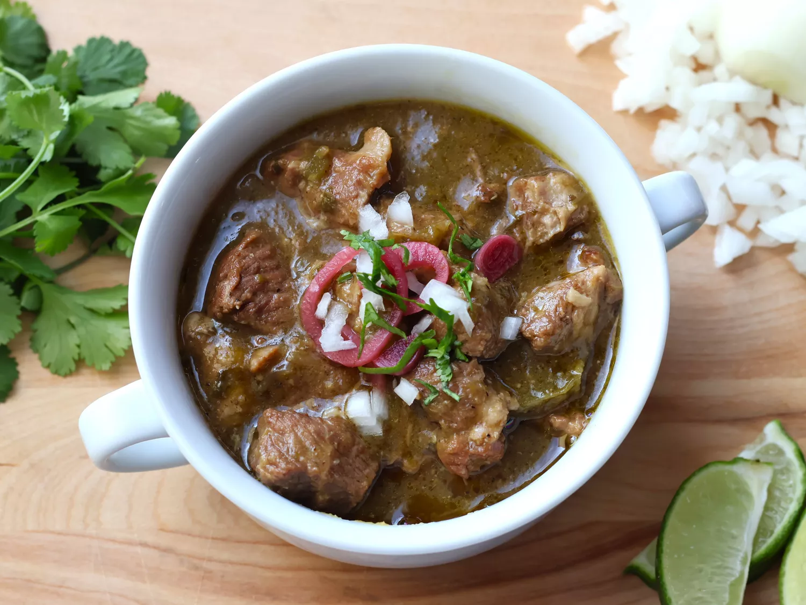

Chile Verde
Home

Description
A mexican chile made with pork and roasted peppers that is sure to warm your bones on a cold winter day.
Ingredients
- 1-1/2 pounds fresh tomatillos, or more to taste, husks removed
- 3 serrano peppers
- 4 cloves garlic, peeled
- 1 tablespoon olive oil
- 3 tablespoons lard or vegetable oil
- 3 pounds pork shoulder, or more to taste, trimmed and cut into 1.5-inch cubes
- 2 teaspoons garlic salt
- 1/2 teaspoon freshly ground black pepper
- 1 medium yellow onion, coarsely chopped
- 1 green bell pepper, coarsely chopped
- 1/2 cup red wine
- 1 cup low-sodium chicken stock
- 1/3 cup chopped fresh cilantro
- 1 teaspoon dried oregano
- 1 teaspoon ground cumin
- 1 teaspoon kosher salt
Steps
- reheat the oven to 350 degrees F.
- Combine tomatillos, serrano peppers, and garlic in a bowl. Drizzle with olive oil and toss to coat. Transfer to a baking sheet.
- Place in the preheated oven and roast until tender, about 30 minutes. Remove vegetables from oven, cool slightly, and transfer to the bowl of a food processor. Puree until smooth. Reduce oven temperature to 275 degrees F.
- While vegetables are roasting, heat lard in a Dutch oven or heavy oven-safe pot over medium-high heat. Sprinkle pork with garlic salt and pepper and add to the pot in batches. Cook each batch until browned, about 7 minutes, removing to a plate with a slotted spoon. Drain and discard all but 2 tablespoons pan drippings.
- Add onion and bell pepper to the pot. Sauté, stirring occasionally, until onion has softened and turned translucent, about 5 minutes. Pour wine into the pan and bring to a boil while scraping the browned bits of food off the bottom of the pan with a wooden spoon. Stir in browned pork, tomatillo puree, chicken stock, cilantro, oregano, cumin, and salt.
- Cover and cook in the oven until pork is tender, 3.5 to 4 hours. Allow to stand for 15 minutes, covered, before serving.